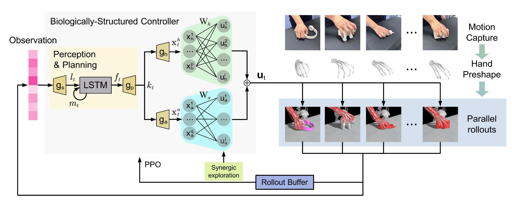

TASE2026

BioSynGrasp: Bio-Inspired Structured Reinforcement Learning With Synergetic Exploration and Human Demonstration for Dexterous Grasping of Musculoskeletal Robot
IEEE Transactions on Automation Science and Engineering · 2026
论文
BibTeX
@article{liu2026biosyngrasp,
title = {{BioSynGrasp: Bio-Inspired Structured Reinforcement Learning With Synergetic Exploration and Human Demonstration for Dexterous Grasping of Musculoskeletal Robot}},
author = {Siyuan Liu and Bo Jiang and Lijun Han and Shanlin Zhong and Ci Song and Huaping Liu and Jiahao Chen},
journal = {IEEE Transactions on Automation Science and Engineering},
year = {2026},
volume = {23},
pages = {6102--6116},
url = {https://ieeexplore.ieee.org/document/11426967}
}